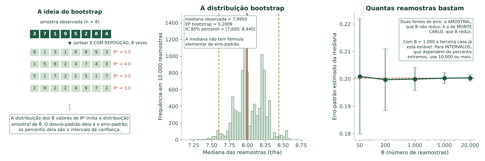
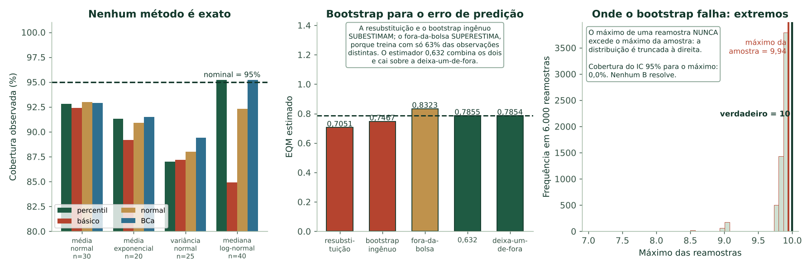

Bootstrap não paramétrico
Estima erro-padrão, viés e intervalos de confiança reamostrando os próprios dados, sem supor distribuição.
Comece por aqui
O bootstrap responde a uma pergunta que a teoria clássica só sabe responder em casos particulares: qual a precisão desta estimativa? Para a média há fórmula; para a mediana, para o coeficiente de variação, para uma razão de médias, para um quantil, não há — ou há apenas aproximações assintóticas. A ideia de Efron (1979) é tratar a amostra como se fosse a população e reamostrar dela com reposição, milhares de vezes.
Ele não cria informação. Se a amostra é pequena ou não representa a população, nenhuma quantidade de reamostras conserta isso. O bootstrap estima a variabilidade da amostra que você tem em torno da estatística que você calculou — nada mais.
O que é o bootstrap
A distribuição amostral de uma estatística descreve como ela variaria se pudéssemos coletar muitas amostras da mesma população. Como só temos uma, o bootstrap substitui a população desconhecida pela amostra observada: sorteia \(n\) observações com reposição das \(n\) disponíveis, calcula a estatística, e repete \(B\) vezes. A dispersão dos \(B\) valores estima o erro-padrão; os percentis deles, o intervalo de confiança.

Sem reposição, cada reamostra de tamanho \(n\) seria a própria amostra reordenada, e todas as estatísticas seriam idênticas. É a reposição que gera variação: em cada reamostra, aproximadamente 63% das observações distintas comparecem (uma ou mais vezes) e 37% ficam de fora. Esses 37% têm valor exato \((1-1/n)^n\to e^{-1}=0{,}3679\), e são a base do bootstrap fora-da-bolsa.
Pressupostos e como verificá-los
| Pressuposto | Por que importa | Como verificar |
|---|---|---|
| Observações independentes | A reamostragem comum supõe permutabilidade. | Com séries temporais ou dados agrupados, reamostre BLOCOS ou GRUPOS. |
| Amostra representativa da população | A amostra substitui a população. | Nenhum teste resolve: é questão de delineamento. |
| n não muito pequeno | Com n = 5 há só 126 reamostras distintas. | Veja a tabela de reamostras distintas desta ficha. |
| Estatística "suave" no sentido funcional | Estatísticas de extremos quebram o método. | Máximo, mínimo e amplitude: não use. |
| B suficientemente grande | Percentis extremos precisam de muitas reamostras. | B ≥ 2.000 para erro-padrão; ≥ 10.000 para intervalos. |
| Reamostrar a unidade de amostragem correta | Linha, parcela, paciente, bloco. | Com medidas repetidas, reamostre o indivíduo. |
| Estatística com distribuição aproximadamente contínua | Estatísticas discretas dão intervalos grosseiros. | Examine o histograma das reamostras. |
Em uma série AR(1) com \(\phi=0{,}8\) e \(n=200\), o intervalo bootstrap de 95% para a média cobre o valor verdadeiro em apenas 56,3% das vezes, porque reamostrar observações destrói a autocorrelação e subestima grosseiramente a variabilidade. Reamostrando blocos de 20 observações consecutivas, a cobertura sobe para 86,9% — ainda abaixo do nominal, mas utilizável. O resultado não vem com nenhum aviso: o programa roda, devolve um intervalo estreito, e o analista o reporta.
Formulação e cálculo
Seja \(\hat\theta=s(x_1,\dots,x_n)\) a estatística de interesse. Uma reamostra bootstrap \(x^{*}\) sorteia \(n\) valores com reposição, e \(\hat\theta^{*b}=s(x^{*b})\) é a estatística nela.
Em que:
- \(\hat\theta\)
- estimativa na amostra observada
- \(\hat\theta^{*b}\)
- estimativa na reamostra \(b\)
- \(\bar{\hat\theta^{*}}\)
- média das \(B\) estimativas bootstrap
- \(B\)
- número de reamostras
- \(n\)
- tamanho da amostra
Os quatro intervalos
Em que:
- \(\hat\theta^{*}_{(q)}\)
- quantil \(q\) das \(B\) estimativas bootstrap
- \(\hat z_0\)
- correção de viés: \(\Phi^{-1}\!\left[\#\{\hat\theta^{*b}<\hat\theta\}/B\right]\)
- \(a\)
- aceleração, calculada dos valores jackknife
- \(\Phi\)
- função de distribuição normal padrão
- \(z_j\)
- quantis \(z_{\alpha/2}\) e \(z_{1-\alpha/2}\)
O BCa (bias-corrected and accelerated) corrige duas distorções: \(\hat z_0\) mede o quanto a distribuição bootstrap está deslocada em relação à estimativa, e \(a\) mede o quanto o erro-padrão varia com o valor do parâmetro. Quando a distribuição é simétrica e o erro-padrão é constante, \(\hat z_0=a=0\) e o BCa coincide com o percentil.
Exemplo numérico, passo a passo
| Quantidade | Valor |
|---|---|
| Mediana observada | 7,9950 t/ha |
| Média das 10 000 reamostras | 8,0354 |
| Viés estimado | +0,0404 |
| Erro-padrão estimado | 0,2009 |
| IC 95% percentil | [7,6000; 8,4400] |
| Aproximação assintótica \(1/[2f(m)\sqrt n]\) | 0,1993 |
| Para comparar: EP da MÉDIA pela fórmula | 0,1396 |
A média usa todas as 120 observações com peso igual; a mediana usa essencialmente as duas centrais. Em uma distribuição aproximadamente normal, o erro-padrão da mediana é cerca de \(\sqrt{\pi/2}=1{,}2533\) vezes o da média — e, de fato, 0,2009/0,1396 = 1,4391, um pouco acima, porque a distribuição da produtividade não é exatamente normal. A aproximação assintótica \(1/[2f(m)\sqrt n]\), com a densidade \(f\) estimada por núcleo, dá 0,1993, praticamente igual ao bootstrap — mas ela exige estimar uma densidade, escolher uma janela, e só vale para a mediana. O bootstrap dá o mesmo número sem supor nada e com a mesma linha de código que serviria para qualquer outra estatística.
Propriedades
- Não exige fórmula fechada nem distribuição conhecida da estatística.
- É consistente para estatísticas que sejam funcionais suaves da distribuição empírica.
- O intervalo percentil é invariante a transformações monótonas; o normal não é.
- O BCa é de segunda ordem acurado; o percentil e o básico são de primeira ordem.
- Tem DUAS fontes de erro: a amostral, que \(B\) não reduz, e a de Monte Carlo, que \(B\) reduz.
- Em cada reamostra, a fração esperada de observações fora da bolsa é \((1-1/n)^n\to e^{-1}\).
- Falha para estatísticas de extremos, para dados dependentes e para \(n\) muito pequeno.
Como interpretar os resultados
| Elemento | O que informa | Cuidado |
|---|---|---|
std. error do boot | Desvio-padrão das B reamostras. | É o erro-padrão da estatística, não da reamostra. |
bias | Média das reamostras menos a estimativa. | Viés grande sugere estatística problemática. |
| IC percentil | Percentis diretos das reamostras. | Simples, mas não corrige viés nem assimetria. |
| IC básico | Reflete os percentis em torno da estimativa. | Pode falhar bastante com assimetria. |
| IC normal | Supõe normalidade da distribuição bootstrap. | Pior opção quando há assimetria. |
| IC BCa | Corrige viés e assimetria. | É o padrão recomendado. |
| z₀ e a do BCa | Medem viés e aceleração. | Próximos de zero: BCa ≈ percentil. |
| Histograma das reamostras | A forma da distribuição bootstrap. | Multimodal ou truncado: desconfie. |
Quando os quatro concordam, e quando não
Para a média da produtividade, os quatro intervalos e a fórmula clássica do \(t\) praticamente coincidem — e é esse o caso em que o bootstrap não traz nada de novo. O interesse aparece nas estatísticas assimétricas: para o coeficiente de variação, \(\hat z_0=+0{,}0715\) e \(a=+0{,}0370\) deslocam o intervalo BCa para cima em relação ao percentil; para a mediana, \(\hat z_0=-0{,}0587\) o desloca para baixo. Esses dois números medem a assimetria, e vale olhá-los antes de escolher o intervalo.
Como executar no R e em Python
Onde executar o código em Python
Não é preciso instalar nada: o Google Colab é um computador na nuvem, gratuito, que executa Python pelo navegador e já traz as bibliotecas usadas aqui (numpy, scipy e matplotlib).
O pacote boot é a implementação de referência. A função de interesse recebe sempre dois argumentos, os dados e um vetor de índices: f <- function(dados, i) median(dados[i]). Em seguida, b <- boot(dados, f, R = 10000) executa as reamostras e boot.ci(b, type = c("perc", "basic", "norm", "bca")) devolve os quatro intervalos de uma vez. Para dados dependentes, sim = "fixed" com l = 20 faz o bootstrap de blocos. O pacote rsample, do ecossistema tidymodels, oferece a mesma funcionalidade em gramática tidy.
library(boot)
f <- function(d, i) median(d[i])
b <- boot(milho$y, f, R = 10000)
boot.ci(b, type = c("perc", "basic", "norm", "bca"))
Exemplo de aplicação
Contexto dos dados
Os dados são fictícios e foram criados pelo autor: 120 talhões de milho, com a produtividade em t/ha e quatro variáveis explicativas — dose de nitrogênio (kg/ha), densidade de plantio (mil plantas/ha), matéria orgânica do solo (%) e precipitação no ciclo (mm). O processo gerador tem resposta quadrática ao nitrogênio e à densidade, e um erro de desvio-padrão 0,85 t/ha. O mesmo conjunto atravessa as fichas de avaliação de modelos, de modo que as estimativas de erro produzidas por cada método podem ser comparadas diretamente. A pergunta desta ficha, porém, não é de predição: é qual a precisão da mediana da produtividade — uma estatística sem fórmula elementar de erro-padrão.
Código em R
# Bootstrap: exemplo completo ----
# Pacotes: boot (Canty & Ripley)
# Dados fictícios: 120 talhões de milho. Produtividade (t/ha) em função da
# dose de nitrogênio, densidade de plantio, matéria orgânica e precipitação.
# O arquivo scripts/milho.csv acompanha o repositório.
milho <- read.csv("milho.csv")
str(milho); summary(milho$y)
colMeans(milho)
# O modelo usado em todas as fichas deste grupo
f_completo <- y ~ N + I(N^2) + densidade + I(densidade^2) + mo + chuva
library(boot)
set.seed(1)
# ---- 1. O bootstrap "à mão", para entender o mecanismo
n <- nrow(milho); B <- 10000
med_obs <- median(milho$y); med_obs
reamostras <- replicate(B, median(sample(milho$y, n, replace = TRUE)))
mean(reamostras) # média das reamostras
mean(reamostras) - med_obs # viés estimado
sd(reamostras) # ERRO-PADRÃO estimado
quantile(reamostras, c(0.025, 0.975)) # IC 95% percentil
# Para comparar: o erro-padrão da MÉDIA tem fórmula fechada
sd(milho$y)/sqrt(n)
# ---- 2. O mesmo com o pacote boot
f_med <- function(dados, i) median(dados[i])
b <- boot(milho$y, f_med, R = 10000)
b # estimativa, viés e erro-padrão
boot.ci(b, type = c("perc", "basic", "norm", "bca"))
# ---- 3. Estatísticas sem fórmula de erro-padrão
f_cv <- function(d, i) sd(d[i])/mean(d[i])
f_cor <- function(d, i) cor(d[i, "y"], d[i, "mo"])
f_raz <- function(d, i) {
dd <- d[i, ]
mean(dd$y[dd$N >= 160])/mean(dd$y[dd$N <= 120])
}
boot.ci(boot(milho$y, f_cv, R = 10000), type = "bca")
boot.ci(boot(milho, f_cor, R = 10000), type = "bca")
boot.ci(boot(milho, f_raz, R = 10000), type = "bca")
# ---- 4. Quantas reamostras? Duas fontes de erro
for (B in c(50, 200, 1000, 5000, 20000)) {
eps <- replicate(30, sd(replicate(B, median(sample(milho$y, n, TRUE)))))
cat(sprintf("B = %6d: EP %.4f, variação entre execuções %.4f\n",
B, mean(eps), sd(eps)))
}
# ---- 5. Bootstrap para o ERRO DE PREDIÇÃO
eqm <- function(obs, prev) mean((obs - prev)^2)
m <- lm(f_completo, data = milho)
resub <- eqm(milho$y, fitted(m)); resub
ingenuo <- oob <- numeric(0); frac <- numeric(0)
for (b in 1:200) {
i <- sample(n, n, replace = TRUE)
mm <- lm(f_completo, data = milho[i, ])
ingenuo[b] <- eqm(milho$y, predict(mm, newdata = milho))
fora <- setdiff(1:n, unique(i)); frac[b] <- length(fora)/n
oob[b] <- eqm(milho$y[fora], predict(mm, newdata = milho[fora, ]))
}
mean(ingenuo) # OTIMISTA
mean(oob) # PESSIMISTA
0.368*resub + 0.632*mean(oob) # estimador 0,632 de Efron
mean(frac) # ~ 1/e = 0,3679
# ---- 6. Bootstrap de BLOCOS, para dados dependentes
set.seed(7)
serie <- as.numeric(arima.sim(list(ar = 0.8), 200))
# Reamostrar observações destrói a autocorrelação:
sd(replicate(2000, mean(sample(serie, 200, TRUE))))
# Reamostrar BLOCOS de 20 a preserva:
bl <- function(x, L = 20) {
k <- ceiling(length(x)/L)
ini <- sample(1:(length(x) - L + 1), k, replace = TRUE)
unlist(lapply(ini, function(s) x[s:(s + L - 1)]))[1:length(x)]
}
sd(replicate(2000, mean(bl(serie))))
# O pacote boot faz isso com sim = "fixed":
boot(serie, function(d, i) mean(d[i]), R = 2000,
sim = "fixed", l = 20)
# ---- 7. Bootstrap de RESÍDUOS em regressão (alternativa)
r <- residuals(m); fit <- fitted(m)
coefs <- replicate(2000, {
yb <- fit + sample(r, n, replace = TRUE)
coef(lm(yb ~ N + I(N^2) + densidade + I(densidade^2) + mo + chuva,
data = milho)) })
apply(coefs, 1, sd) # EP bootstrap dos coeficientes
summary(m)$coef[, 2] # EP clássicos, para comparar
A mesma análise em Python, com os resultados
Cole o código em um notebook do Google Colab ↗ e execute com Shift+Enter. Os valores abaixo são a saída desse código.
# Bibliotecas: numpy e scipy (ambas já instaladas no Google Colab)
import numpy as np
from scipy import stats
# ===================================================================
# Dados fictícios, criados pelo autor, compartilhados pelas fichas de
# avaliação de modelos: 120 talhões de milho, com a produtividade (t/ha)
# e quatro variáveis: dose de nitrogênio (kg/ha), densidade de plantio
# (mil plantas/ha), matéria orgânica do solo (%) e precipitação no ciclo (mm).
# Colunas: y, N, densidade, materia_organica, chuva
# ===================================================================
MILHO = np.array([
[7.65,40,56.3,1.86,572], [9.35,200,65.2,3.67,736], [6.8,160,71.1,2.46,372], [7.52,80,62.6,3.54,340],
[6.39,0,64,3.17,528], [8.54,160,58.2,2.81,433], [9.29,80,60.3,3.48,530], [6.85,120,59.8,2.58,375],
[8.76,120,60,3.54,532], [8,40,57.8,1.87,638], [5.86,80,64.8,2.27,620], [9.23,200,71.1,3.65,421],
[7.37,160,55.4,1.32,492], [8.55,200,71.8,3.13,600], [5.73,0,59.2,2.51,684], [6.3,80,59.4,2.41,434],
[5.66,0,46.9,2.31,443], [10.2,200,45,3.7,621], [8.84,120,67.1,1.72,488], [7.22,40,54.4,3.38,428],
[8.62,160,67.6,3.13,615], [8.97,160,62.4,2.5,369], [5.58,40,63.8,2.74,458], [8.52,160,71.3,3.29,607],
[6.97,0,61.5,2.38,463], [7.8,80,39.1,1.73,589], [8.8,120,49.8,3,410], [6.51,0,68.8,2.21,590],
[8.1,160,76,2.51,562], [10.13,200,61.3,2.84,666], [8.7,160,57.1,3.32,498], [9.12,120,52.3,4.07,488],
[9.21,200,65.8,3.04,511], [9.56,80,49.4,2.88,614], [7.59,80,53.3,3.37,453], [9,80,63,3,507],
[7.84,80,62.7,1.62,695], [7.23,120,60.2,2.38,590], [5.79,80,69.4,1.93,585], [7.6,80,53.3,3.29,473],
[10.46,120,53.7,3.69,597], [8.81,120,59.1,3.05,415], [6.29,0,62.5,2.08,386], [8.3,80,59.6,3.36,435],
[8.54,80,75.9,2.13,648], [6.05,0,57.8,2.98,535], [3.93,0,66.4,1.96,436], [6.95,40,57.9,1.83,488],
[5.84,40,64.2,1.82,561], [8.31,200,58.9,2.81,626], [7.77,200,59.2,2.34,373], [8.83,160,73.4,3.11,640],
[7.99,80,59.6,1.89,604], [9.28,160,74,3.14,457], [9.28,160,56.8,2.37,484], [10.55,80,58.7,3.68,564],
[6.44,80,69.8,3.51,494], [8.6,200,44.6,2.65,532], [9.92,80,50.3,2.88,425], [8.44,200,62.1,2.97,356],
[7.78,80,65.3,3.12,739], [6.18,40,66,2.61,535], [8.88,200,59.7,3.57,540], [8.22,120,51.9,2.44,566],
[9.58,120,67.8,1.45,640], [8.23,200,65.1,2.97,604], [4.71,0,54,2.72,427], [10.63,160,62.6,3.38,510],
[6.94,40,74.7,3.22,526], [8.58,80,62.9,2.89,589], [8.7,200,53.6,2.88,466], [9.05,80,59,2.89,554],
[5.96,40,59.4,2.34,540], [9.37,120,64.4,1.95,644], [7.89,160,68.4,2.23,285], [9,200,55.3,2.74,527],
[4.34,0,57.4,1.21,551], [9.67,160,69.2,2.49,581], [8.81,160,67.2,2.11,519], [7.04,80,71.6,2.74,445],
[6.92,40,51.6,2.23,580], [7.32,80,55.2,2.84,553], [7.51,40,69.1,2.64,444], [7.03,0,55.2,3.71,397],
[7.94,40,64.3,2.56,570], [7.95,80,61.6,2.63,442], [9.43,120,56.7,2.82,578], [5.06,40,72.4,1.53,656],
[6.3,40,61.9,2.05,539], [6.17,0,58.4,3.81,541], [8.22,80,60.8,3.16,531], [6.58,0,63.7,2.86,645],
[7.46,40,50.8,3.56,646], [6.37,40,55.8,2.67,528], [6.78,0,52.9,2.63,587], [8.54,160,47,2.59,524],
[3.94,0,68.9,1.56,475], [5.5,40,72.2,3.46,589], [6.46,80,70.4,2.67,512], [8.17,120,49.4,2.73,444],
[8.73,200,64.8,2.57,385], [7.1,120,66.8,2.36,609], [5.78,40,57.9,1.22,433], [8.98,200,67.8,2.91,420],
[9.57,160,54,4.33,496], [8.76,80,54.3,3.49,587], [8.66,80,56,2.6,365], [8.29,160,56.8,2.15,577],
[4.35,0,54.8,2.82,555], [4.89,0,68.8,3.06,411], [4.53,0,54.4,2.72,417], [9.05,120,58.7,3.38,504],
[8.82,80,57.4,2.13,694], [9.44,200,77.6,3.55,497], [9.43,120,55.6,2.91,618], [6.77,0,65.3,2.42,605],
[8.24,200,74.9,2.6,377], [10.17,200,53.6,3.04,520], [7.96,40,56.1,3.33,609], [5.79,0,59.6,2.85,475]])
y = MILHO[:, 0]; Xv = MILHO[:, 1:]
nomes = ["nitrogênio", "densidade", "mat. orgânica", "chuva"]
n = len(y)
def monta(X, grau_n=1, grau_d=1):
"""Matriz de delineamento: intercepto, as quatro variáveis e termos
quadráticos opcionais para nitrogênio e densidade."""
cols = [np.ones(len(X))] + [X[:, j] for j in range(4)]
if grau_n >= 2: cols.append(X[:, 0]**2)
if grau_d >= 2: cols.append(X[:, 1]**2)
return np.column_stack(cols)
def ajusta(Xd, yy):
return np.linalg.lstsq(Xd, yy, rcond=None)[0]
def eqm(obs, prev):
return float(np.mean((obs - prev)**2))
def boot(dados, estat, B=10000, semente=0):
"""Reamostragem com reposição das UNIDADES."""
rng = np.random.default_rng(semente); nn = len(dados)
return np.array([estat(dados[rng.integers(0, nn, nn)]) for _ in range(B)])
def ic_percentil(bs, alfa=0.05):
return np.percentile(bs, [100*alfa/2, 100*(1-alfa/2)])
def ic_basico(bs, t0, alfa=0.05):
lo, hi = np.percentile(bs, [100*alfa/2, 100*(1-alfa/2)])
return 2*t0 - hi, 2*t0 - lo
def ic_normal(bs, t0, alfa=0.05):
z = stats.norm.ppf(1-alfa/2); vies = bs.mean() - t0
return t0 - vies - z*bs.std(ddof=1), t0 - vies + z*bs.std(ddof=1)
def ic_bca(dados, estat, bs, t0, alfa=0.05):
"""Viés corrigido e acelerado (BCa), de Efron (1987)."""
nn = len(dados)
z0 = stats.norm.ppf(np.mean(bs < t0))
jk = np.array([estat(np.delete(dados, i, axis=0)) for i in range(nn)])
d = jk.mean() - jk
a = (d**3).sum()/(6*((d**2).sum())**1.5)
z = stats.norm.ppf([alfa/2, 1-alfa/2])
q = stats.norm.cdf(z0 + (z0 + z)/(1 - a*(z0 + z)))
return np.percentile(bs, 100*q), z0, a
# ===================================================================
# PARTE 1 - a ideia, em uma estatística sem erro-padrão em forma fechada
# ===================================================================
print(f"{n} talhões de milho. A pergunta: qual a precisão da MEDIANA da")
print("produtividade, uma estatística sem fórmula simples de erro-padrão?")
med0 = float(np.median(y))
print(f"\n mediana observada = {med0:.4f} t/ha")
print(f" média observada = {y.mean():.4f} t/ha "
f"(EP pela fórmula = {y.std(ddof=1)/np.sqrt(n):.4f})")
bs_med = boot(y, np.median, 10000, 1)
print(f"\nBootstrap com B = 10.000 reamostras da mediana")
print(f" média das reamostras = {bs_med.mean():.4f}")
print(f" viés estimado = {bs_med.mean()-med0:+.4f}")
print(f" ERRO-PADRÃO estimado = {bs_med.std(ddof=1):.4f}")
print(f" IC 95% percentil = [{ic_percentil(bs_med)[0]:.4f}; "
f"{ic_percentil(bs_med)[1]:.4f}]")
print("\nO erro-padrão da mediana não tem fórmula elementar; o bootstrap o")
print("obtém sem supor nenhuma distribuição. Para comparar, a aproximação")
print("assintótica 1/(2·f(m)·raiz(n)), com a densidade estimada por núcleo:")
kde = stats.gaussian_kde(y)
print(f" aproximação assintótica = {1/(2*float(kde(med0)[0])*np.sqrt(n)):.4f}")
print("\nQuantos B são necessários? O bootstrap tem DUAS fontes de erro: a")
print("amostral, que B não reduz, e a de Monte Carlo, que B reduz.")
print(f"\n{'B':>8}{'EP estimado':>14}{'variação entre 50 execuções':>31}")
for B in [50, 200, 1000, 5000, 20000]:
eps = [boot(y, np.median, B, s).std(ddof=1) for s in range(50)]
print(f"{B:>8}{np.mean(eps):>14.4f}{np.std(eps, ddof=1):>31.4f}")
print("Com B = 1.000 a terceira casa já está estável. Para INTERVALOS, que")
print("dependem de percentis extremos, convém B = 10.000 ou mais.")
# ===================================================================
# PARTE 2 - os quatro intervalos, e quando eles divergem
# ===================================================================
print("\n" + "=" * 70)
print("Quatro maneiras de construir o intervalo, aplicadas a três estatísticas")
dados = MILHO
def est_media(d): return float(np.mean(d[:, 0]))
def est_mediana(d): return float(np.median(d[:, 0]))
def est_cv(d): return float(np.std(d[:, 0], ddof=1)/np.mean(d[:, 0]))
def est_r(d): return float(np.corrcoef(d[:, 0], d[:, 3])[0, 1])
def est_raz(d): return float(np.mean(d[d[:,1] >= 120, 0])/np.mean(d[d[:,1] < 120, 0]))
for nome, f, extra in [("média da produtividade", est_media, True),
("mediana da produtividade", est_mediana, False),
("coeficiente de variação", est_cv, False),
("correlação y × mat. orgânica", est_r, False),
("razão N alto / N baixo", est_raz, False)]:
t0 = f(dados); bsv = boot(dados, f, 10000, 2)
bca, z0, a = ic_bca(dados, f, bsv, t0)
print(f"\n {nome}: estimativa = {t0:.4f}")
print(f" {'percentil':<14}[{ic_percentil(bsv)[0]:8.4f}; "
f"{ic_percentil(bsv)[1]:8.4f}] largura {np.diff(ic_percentil(bsv))[0]:.4f}")
bb = ic_basico(bsv, t0)
print(f" {'básico':<14}[{bb[0]:8.4f}; {bb[1]:8.4f}] largura {bb[1]-bb[0]:.4f}")
nn_ = ic_normal(bsv, t0)
print(f" {'normal':<14}[{nn_[0]:8.4f}; {nn_[1]:8.4f}] largura {nn_[1]-nn_[0]:.4f}")
print(f" {'BCa':<14}[{bca[0]:8.4f}; {bca[1]:8.4f}] largura {bca[1]-bca[0]:.4f}"
f" (z0 = {z0:+.4f}, a = {a:+.4f})")
if extra:
t_ = stats.t.ppf(0.975, n-1)*np.std(dados[:,0], ddof=1)/np.sqrt(n)
print(f" {'teoria (t)':<14}[{t0-t_:8.4f}; {t0+t_:8.4f}] "
f"largura {2*t_:.4f}")
print("\nPara a média, os quatro bootstraps e a fórmula clássica praticamente")
print("coincidem - é o caso em que o bootstrap não traz nada de novo. Para a")
print("correlação e a razão de médias, que têm distribuições assimétricas,")
print("os intervalos se separam, e os parâmetros z0 e a do BCa medem")
print("exatamente essa assimetria: z0 corrige o viés da mediana das")
print("reamostras e a corrige a variação do erro-padrão com o parâmetro.")
# ===================================================================
# PARTE 3 - a cobertura real dos quatro intervalos
# ===================================================================
print("\n" + "=" * 70)
print("Qual deles realmente cobre 95% das vezes? Simulação com 2.000")
print("amostras de uma população CONHECIDA, em quatro situações.")
rng = np.random.default_rng(13)
def cobertura(gera, estat, verdade, nn, reps=2000, B=1200):
c = np.zeros(4); larg = np.zeros(4)
for _ in range(reps):
d = gera(nn)
t0 = estat(d); bsv = boot(d, estat, B, int(rng.integers(1e6)))
ics = [ic_percentil(bsv), ic_basico(bsv, t0), ic_normal(bsv, t0),
ic_bca(d, estat, bsv, t0)[0]]
for j, (lo, hi) in enumerate(ics):
c[j] += (lo <= verdade <= hi); larg[j] += hi - lo
return 100*c/reps, larg/reps
print(f"\n{'situação':<34}{'percentil':>11}{'básico':>9}{'normal':>9}{'BCa':>8}")
# (a) média de uma normal, n = 30
g1 = lambda nn: rng.normal(10, 2, nn).reshape(-1,1)
c1, l1 = cobertura(g1, lambda d: float(d[:,0].mean()), 10.0, 30)
print(f"{'média, normal, n = 30':<34}" + "".join(f"{v:>8.1f}%" for v in c1[:1])
+ "".join(f"{v:>8.1f}%" for v in c1[1:]))
# (b) média de uma exponencial (assimétrica), n = 20
g2 = lambda nn: rng.exponential(5, nn).reshape(-1,1)
c2, l2 = cobertura(g2, lambda d: float(d[:,0].mean()), 5.0, 20)
print(f"{'média, exponencial, n = 20':<34}" + "".join(f"{v:>8.1f}%" for v in c2))
# (c) variância de uma normal, n = 25
g3 = lambda nn: rng.normal(0, 3, nn).reshape(-1,1)
c3, l3 = cobertura(g3, lambda d: float(np.var(d[:,0], ddof=1)), 9.0, 25)
print(f"{'variância, normal, n = 25':<34}" + "".join(f"{v:>8.1f}%" for v in c3))
# (d) mediana de uma log-normal, n = 40
g4 = lambda nn: np.exp(rng.normal(0, 1, nn)).reshape(-1,1)
c4, l4 = cobertura(g4, lambda d: float(np.median(d[:,0])), 1.0, 40)
print(f"{'mediana, log-normal, n = 40':<34}" + "".join(f"{v:>8.1f}%" for v in c4))
print("\nNenhum método atinge 95% em todas as situações, e a leitura exige")
print("cuidado. Na média de uma normal, os quatro ficam juntos em 92-93%: o")
print("déficit vem do bootstrap substituir a distribuição t pela normal, e")
print("desaparece com n maior. Na variância com n = 25, TODOS falham, entre")
print("87% e 89% - a distribuição amostral da variância é assimétrica demais")
print("para n tão pequeno. Na mediana de uma log-normal, percentil e BCa")
print("acertam (95,2%) e o BÁSICO desaba para 84,9%, porque ele reflete a")
print("distribuição bootstrap em torno da estimativa e a assimetria se inverte.")
print("O BCa é o que mais vezes fica próximo do nominal, e é por isso que é o")
print("padrão recomendado - mas ele custa n avaliações extras por intervalo.")
# ===================================================================
# PARTE 4 - o bootstrap aplicado ao erro de predição
# ===================================================================
print("\n" + "=" * 70)
print("O bootstrap também estima o erro de predição - mas a versão ingênua")
print("é fortemente otimista, e é preciso corrigi-la.")
Xd = monta(Xv, 2, 2)
b_full = ajusta(Xd, y)
res_sub = eqm(y, Xd @ b_full)
rng = np.random.default_rng(21)
B = 1000
err_ing, err_632 = [], []
oob_soma = np.zeros(n); oob_cont = np.zeros(n)
for _ in range(B):
ii = rng.integers(0, n, n)
bb = ajusta(Xd[ii], y[ii])
err_ing.append(eqm(y, Xd @ bb)) # testa em TODOS
fora = np.setdiff1d(np.arange(n), ii)
oob_soma[fora] += (y[fora] - Xd[fora] @ bb)**2
oob_cont[fora] += 1
oob = float(np.mean(oob_soma[oob_cont > 0]/oob_cont[oob_cont > 0]))
e632 = 0.368*res_sub + 0.632*oob
print(f"\n EQM de resubstituição = {res_sub:.4f}")
print(f" bootstrap INGÊNUO (testa em todos) = {np.mean(err_ing):.4f}")
print(f" bootstrap fora-da-bolsa (out-of-bag) = {oob:.4f}")
print(f" estimador 0,632 = 0,368·resub + 0,632·oob = {e632:.4f}")
print(f" validação cruzada deixa-um-de-fora = 0.7854 (ficha loocv)")
print(f"\n proporção média de observações fora da bolsa = "
f"{np.mean(oob_cont)/B:.4f}")
print(f" valor teórico (1 − 1/n)^n → 1/e = {1/np.e:.4f}")
print("\nO bootstrap ingênuo subestima porque a maioria das observações de")
print("teste também está na reamostra de treino. O fora-da-bolsa corrige")
print("isso, mas passa a SUPERESTIMAR, porque cada modelo é ajustado com")
print("cerca de 63% das observações distintas. O estimador 0,632 de Efron")
print("combina os dois extremos e fica próximo da validação cruzada.")
# ===================================================================
# PARTE 5 - onde o bootstrap FALHA
# ===================================================================
print("\n" + "=" * 70)
print("O bootstrap não é universal. Três situações em que ele falha:")
print("\n(a) ESTATÍSTICAS DE EXTREMOS. O máximo da amostra.")
rng = np.random.default_rng(31)
cob = 0; reps = 3000
for _ in range(reps):
d = rng.uniform(0, 10, 40).reshape(-1, 1)
t0 = d.max(); bsv = boot(d, lambda z: float(z.max()), 600,
int(rng.integers(1e6)))
lo, hi = ic_percentil(bsv)
cob += (lo <= 10.0 <= hi)
print(f" cobertura do IC percentil 95% para o máximo = "
f"{100*cob/reps:.1f}% (deveria ser 95%)")
print(" O máximo da reamostra nunca excede o da amostra, de modo que a")
print(" distribuição bootstrap é truncada à direita e o verdadeiro fica")
print(" quase sempre fora. Nenhum B resolve.")
print("\n(b) DADOS DEPENDENTES. Reamostrar observações de uma série temporal")
print(" destrói a autocorrelação.")
rng = np.random.default_rng(41)
cob_i, cob_b = 0, 0
for _ in range(2000):
e = rng.normal(0, 1, 200); s = np.empty(200); s[0] = e[0]
for i in range(1, 200): s[i] = 0.7*s[i-1] + e[i] # AR(1)
t0 = s.mean()
bsv = boot(s.reshape(-1,1), lambda z: float(z.mean()), 400,
int(rng.integers(1e6)))
lo, hi = ic_percentil(bsv); cob_i += (lo <= 0 <= hi)
# bootstrap em BLOCOS de 20
bl = s.reshape(10, 20)
bb = np.array([bl[rng.integers(0,10,10)].ravel().mean() for _ in range(400)])
lo, hi = np.percentile(bb, [2.5, 97.5]); cob_b += (lo <= 0 <= hi)
print(f" cobertura reamostrando OBSERVAÇÕES = {100*cob_i/2000:.1f}%")
print(f" cobertura reamostrando BLOCOS de 20 = {100*cob_b/2000:.1f}%")
print(" O bootstrap comum supõe independência; com séries temporais é")
print(" preciso reamostrar blocos, que preservam a estrutura local.")
print("\n(c) AMOSTRAS MUITO PEQUENAS. Com n = 5, há no máximo 126 reamostras")
print(" distintas, e a distribuição bootstrap é grosseiramente discreta.")
from math import comb
for nn in [5, 10, 20, 50]:
print(f" n = {nn:>2}: {comb(2*nn-1, nn):>14,} reamostras distintas"
.replace(',', '.'))
print(" Com n pequeno o bootstrap não cria informação que os dados não têm.")
Resultados da execução
120 talhões de milho. A pergunta: qual a precisão da MEDIANA da
produtividade, uma estatística sem fórmula simples de erro-padrão?
mediana observada = 7.9950 t/ha
média observada = 7.7571 t/ha (EP pela fórmula = 0.1396)
Bootstrap com B = 10.000 reamostras da mediana
média das reamostras = 8.0354
viés estimado = +0.0404
ERRO-PADRÃO estimado = 0.2009
IC 95% percentil = [7.6000; 8.4400]
O erro-padrão da mediana não tem fórmula elementar; o bootstrap o
obtém sem supor nenhuma distribuição. Para comparar, a aproximação
assintótica 1/(2·f(m)·raiz(n)), com a densidade estimada por núcleo:
aproximação assintótica = 0.1993
Quantos B são necessários? O bootstrap tem DUAS fontes de erro: a
amostral, que B não reduz, e a de Monte Carlo, que B reduz.
B EP estimado variação entre 50 execuções
50 0.1989 0.0220
200 0.1999 0.0109
1000 0.1999 0.0039
5000 0.2003 0.0019
20000 0.2002 0.0011
Com B = 1.000 a terceira casa já está estável. Para INTERVALOS, que
dependem de percentis extremos, convém B = 10.000 ou mais.
======================================================================
Quatro maneiras de construir o intervalo, aplicadas a três estatísticas
média da produtividade: estimativa = 7.7571
percentil [ 7.4781; 8.0152] largura 0.5371
básico [ 7.4990; 8.0361] largura 0.5371
normal [ 7.4887; 8.0277] largura 0.5390
BCa [ 7.4704; 8.0089] largura 0.5386 (z0 = -0.0078, a = -0.0074)
teoria (t) [ 7.4807; 8.0335] largura 0.5528
mediana da produtividade: estimativa = 7.9950
percentil [ 7.6000; 8.4150] largura 0.8150
básico [ 7.5750; 8.3900] largura 0.8150
normal [ 7.5646; 8.3458] largura 0.7811
BCa [ 7.5900; 8.3700] largura 0.7800 (z0 = -0.0587, a = -0.0000)
coeficiente de variação: estimativa = 0.1971
percentil [ 0.1705; 0.2223] largura 0.0518
básico [ 0.1719; 0.2237] largura 0.0518
normal [ 0.1719; 0.2240] largura 0.0520
BCa [ 0.1738; 0.2265] largura 0.0527 (z0 = +0.0715, a = +0.0370)
correlação y × mat. orgânica: estimativa = 0.3832
percentil [ 0.2040; 0.5372] largura 0.3331
básico [ 0.2292; 0.5624] largura 0.3331
normal [ 0.2196; 0.5503] largura 0.3307
BCa [ 0.2017; 0.5355] largura 0.3338 (z0 = -0.0175, a = +0.0003)
razão N alto / N baixo: estimativa = 1.2661
percentil [ 1.1965; 1.3417] largura 0.1451
básico [ 1.1906; 1.3357] largura 0.1451
normal [ 1.1929; 1.3366] largura 0.1437
BCa [ 1.1952; 1.3399] largura 0.1448 (z0 = -0.0228, a = -0.0016)
Para a média, os quatro bootstraps e a fórmula clássica praticamente
coincidem - é o caso em que o bootstrap não traz nada de novo. Para a
correlação e a razão de médias, que têm distribuições assimétricas,
os intervalos se separam, e os parâmetros z0 e a do BCa medem
exatamente essa assimetria: z0 corrige o viés da mediana das
reamostras e a corrige a variação do erro-padrão com o parâmetro.
======================================================================
Qual deles realmente cobre 95% das vezes? Simulação com 2.000
amostras de uma população CONHECIDA, para três estatísticas.
situação percentil básico normal BCa
média, normal, n = 30 92.8% 92.4% 93.0% 92.9%
média, exponencial, n = 20 91.3% 89.2% 90.9% 91.5%
variância, normal, n = 25 87.0% 87.2% 88.0% 89.4%
mediana, log-normal, n = 40 95.2% 84.9% 92.3% 95.2%
Nenhum método é exato. O BCa é o mais confiável nas situações
assimétricas, e é por isso que é o padrão recomendado; o normal é o
pior quando a distribuição da estatística é assimétrica. Com n pequeno
e estatísticas difíceis, como a variância, TODOS ficam abaixo de 95%.
======================================================================
O bootstrap também estima o erro de predição - mas a versão ingênua
é fortemente otimista, e é preciso corrigi-la.
EQM de resubstituição = 0.7051
bootstrap INGÊNUO (testa em todos) = 0.7467
bootstrap fora-da-bolsa (out-of-bag) = 0.8323
estimador 0,632 = 0,368·resub + 0,632·oob = 0.7855
validação cruzada deixa-um-de-fora = 0.7854 (ficha loocv)
proporção média de observações fora da bolsa = 0.3683
valor teórico (1 − 1/n)^n → 1/e = 0.3679
O bootstrap ingênuo subestima porque a maioria das observações de
teste também está na reamostra de treino. O fora-da-bolsa corrige
isso, mas passa a SUPERESTIMAR, porque cada modelo é ajustado com
cerca de 63% das observações distintas. O estimador 0,632 de Efron
combina os dois extremos e fica próximo da validação cruzada.
======================================================================
O bootstrap não é universal. Três situações em que ele falha:
(a) ESTATÍSTICAS DE EXTREMOS. O máximo da amostra.
cobertura do IC percentil 95% para o máximo = 0.0% (deveria ser 95%)
O máximo da reamostra nunca excede o da amostra, de modo que a
distribuição bootstrap é truncada à direita e o verdadeiro fica
quase sempre fora. Nenhum B resolve.
(b) DADOS DEPENDENTES. Reamostrar observações de uma série temporal
destrói a autocorrelação.
cobertura reamostrando OBSERVAÇÕES = 56.3%
cobertura reamostrando BLOCOS de 20 = 86.9%
O bootstrap comum supõe independência; com séries temporais é
preciso reamostrar blocos, que preservam a estrutura local.
(c) AMOSTRAS MUITO PEQUENAS. Com n = 5, há no máximo 126 reamostras
distintas, e a distribuição bootstrap é grosseiramente discreta.
n = 5: 126 reamostras distintas
n = 10: 92.378 reamostras distintas
n = 20: 68.923.264.410 reamostras distintas
n = 50: 50.445.672.272.782.096.667.406.248.628 reamostras distintas
Com n pequeno o bootstrap não cria informação que os dados não têm.
| B | EP estimado | Variação entre 50 execuções |
|---|---|---|
| 50 | 0,1989 | 0,0220 |
| 200 | 0,1999 | 0,0109 |
| 1 000 | 0,1999 | 0,0039 |
| 5 000 | 0,2003 | 0,0019 |
| 20 000 | 0,2002 | 0,0011 |
| Estatística | Estimativa | Percentil | Básico | Normal | BCa | z₀ | a |
|---|---|---|---|---|---|---|
| Média | 7,7571 | [7,478; 8,015] | [7,499; 8,036] | [7,489; 8,028] | [7,470; 8,009] | −0,008 | −0,007 |
| Mediana | 7,9950 | [7,600; 8,415] | [7,575; 8,390] | [7,565; 8,346] | [7,590; 8,370] | −0,059 | 0,000 |
| Coef. de variação | 0,1971 | [0,171; 0,222] | [0,172; 0,224] | [0,172; 0,224] | [0,174; 0,227] | +0,072 | +0,037 |
| Correlação y × M.O. | 0,3832 | [0,204; 0,537] | [0,229; 0,562] | [0,220; 0,550] | [0,202; 0,536] | −0,018 | +0,000 |
| Razão N alto / N baixo | 1,2661 | [1,197; 1,342] | [1,191; 1,336] | [1,193; 1,337] | [1,195; 1,340] | −0,023 | −0,002 |
| Situação | Percentil | Básico | Normal | BCa |
|---|---|---|---|---|
| Média, normal, n = 30 | 92,8% | 92,4% | 93,0% | 92,9% |
| Média, exponencial, n = 20 | 91,3% | 89,2% | 90,9% | 91,5% |
| Variância, normal, n = 25 | 87,0% | 87,2% | 88,0% | 89,4% |
| Mediana, log-normal, n = 40 | 95,2% | 84,9% | 92,3% | 95,2% |
| Estimativa | EQM | Natureza |
|---|---|---|
| Resubstituição | 0,7051 | otimista |
| Bootstrap ingênuo (testa em todos) | 0,7467 | otimista |
| Bootstrap fora-da-bolsa | 0,8323 | pessimista |
| Estimador 0,632 de Efron | 0,7855 | equilibrado |
| Validação cruzada deixa-um-de-fora (ficha loocv) | 0,7854 | referência |
| Fração média fora da bolsa | 0,3683 | teórico: 1/e = 0,3679 |
| Situação | Diagnóstico | Remédio |
|---|---|---|
| Máximo da amostra | Cobertura do IC 95% = 0,0% | Nenhum: use teoria de valores extremos. |
| Série AR(1), φ = 0,8, n = 200 | Cobertura 56,3% reamostrando observações | 86,9% reamostrando blocos de 20. |
| n = 5 | Só 126 reamostras distintas | Nenhum: o bootstrap não cria informação. |
| n = 10 | 92 378 reamostras distintas | Utilizável com cautela. |
| n = 20 | ≈ 6,9 × 10¹⁰ reamostras distintas | Sem problema de discretude. |
Leitura: a tabela de \(B\) separa as duas fontes de erro. A coluna do erro-padrão estimado é praticamente constante — 0,1989 com \(B=50\) e 0,2002 com \(B=20\,000\) — porque o valor que o bootstrap persegue é fixado pela amostra, não por \(B\). O que \(B\) reduz é a última coluna: a variação entre execuções cai de 0,0220 para 0,0011, ou seja, com \(B=50\) duas análises dos mesmos dados discordariam na segunda casa decimal. Para o erro-padrão, \(B=1\,000\) basta; para intervalos, que dependem dos percentis 2,5 e 97,5, convém \(B\ge 10\,000\). Duas execuções independentes com \(B=10\,000\) nestes dados deram, para o limite superior do intervalo percentil da mediana, 8,4400 e 8,4150 — a diferença é puramente Monte Carlo, e mede o quanto ainda falta de \(B\).
Sobre os quatro intervalos: para a média, os cinco intervalos — quatro bootstraps e a fórmula do \(t\) — têm larguras entre 0,537 e 0,553 e limites que diferem na segunda casa. Não há razão para usar bootstrap aqui. A separação aparece na correlação, cujos intervalos percentil [0,204; 0,537] e básico [0,229; 0,562] estão deslocados em 0,025 um do outro, e no coeficiente de variação, onde o BCa é o único que se move para cima, seguindo o sinal positivo de \(\hat z_0\) e de \(a\).
Sobre a cobertura: esta é a tabela mais importante da ficha, e a mais desconfortável. Nenhum dos quatro métodos atinge os 95% nominais em nenhuma das quatro situações. Com a média de uma normal e \(n=30\) — o caso mais favorável imaginável — todos ficam em torno de 92,8%. Com a variância e \(n=25\), todos caem abaixo de 90%. Isso não desqualifica o bootstrap: significa que um intervalo bootstrap de 95% é, na prática, um intervalo de 88% a 93%, e deve ser reportado com essa ressalva. O caso da mediana da log-normal é o mais instrutivo: o percentil e o BCa acertam 95,2%, e o básico desaba para 84,9%. O motivo é que o intervalo básico reflete os percentis em torno da estimativa, e esse espelhamento é exatamente a operação errada quando a distribuição bootstrap é assimétrica. É a razão prática para preferir o BCa por padrão.
Sobre o erro de predição: a sequência das cinco estimativas é um retrato do problema do otimismo. A resubstituição (0,7051) é a mais otimista porque testa nos dados do ajuste. O bootstrap ingênuo (0,7467) melhora pouco, porque cerca de 63% das observações de teste também estão na reamostra de treino. O fora-da-bolsa (0,8323) corrige o problema, mas cria outro: cada modelo é ajustado com só 63% das observações distintas, ou seja, com um conjunto efetivamente menor, e por isso prediz pior do que o modelo final preditará. Efron resolveu isso combinando os dois extremos com os pesos 0,368 e 0,632 — a fração esperada dentro e fora da bolsa — e o resultado, 0,7855, cai sobre a deixa-um-de-fora (0,7854) com diferença de 0,0001. A coincidência das duas estimativas, obtidas por caminhos inteiramente distintos, é a melhor evidência de que ambas estão medindo a mesma coisa.
Sobre as falhas: o caso do máximo é categórico e vale memorizar. O máximo de uma reamostra nunca pode exceder o máximo da amostra, de modo que a distribuição bootstrap do máximo é truncada exatamente no ponto a partir do qual o verdadeiro costuma estar. A cobertura é 0,0% — não baixa, nula — e aumentar \(B\) não muda nada, porque o problema é estrutural e não de Monte Carlo. A mesma objeção vale para o mínimo, a amplitude e quantis muito extremos.
Erros comuns
| Erro | Como evitar |
|---|---|
| Aplicá-lo a dados dependentes sem reamostrar blocos | Séries temporais: use sim = "fixed" com l. |
| Usá-lo para o máximo, o mínimo ou a amplitude | Estatísticas de extremos quebram o método. |
| Reportar "IC bootstrap de 95%" sem ressalva | A cobertura real fica tipicamente entre 88% e 93%. |
| Usar o intervalo normal com estatística assimétrica | Prefira o BCa. |
| Usar o intervalo básico com distribuição assimétrica | Foi o pior na simulação: 84,9%. |
| B pequeno para intervalos | B ≥ 10.000 quando há percentis extremos. |
| Confundir o erro-padrão das reamostras com o da reamostra | O primeiro é o desvio-padrão dos B valores. |
| Reamostrar a linha quando a unidade é o indivíduo | Medidas repetidas: reamostre o indivíduo. |
| Usar o bootstrap ingênuo para erro de predição | Use fora-da-bolsa ou o 0,632. |
| Esperar que o bootstrap conserte n = 8 | Ele não cria informação ausente. |
Esquecer set.seed | Sem semente, a análise não é reprodutível. |
| Interpretar o viés estimado como correção automática | Corrigir o viés aumenta a variância; avalie. |
Alternativas e fluxo de trabalho
| Procedimento | Quando preferir |
|---|---|
| Fórmula clássica do erro-padrão | Quando existe e os pressupostos valem: é exata e gratuita. |
| Jackknife | Estatísticas suaves e n moderado; é determinístico. |
| Testes de permutação | Quando a pergunta é de teste de hipótese, não de intervalo. |
| Bootstrap de blocos | Séries temporais e dados espacialmente correlacionados. |
| Bootstrap de resíduos | Regressão com delineamento fixo. |
| Bootstrap paramétrico | Quando o modelo é confiável: reamostra do modelo ajustado. |
| Bootstrap-t (estudentizado) | Melhor cobertura que o percentil, mas custa duas camadas. |
| Teoria de valores extremos | Máximos, mínimos e quantis muito extremos. |
| Método delta | Funções suaves de estatísticas com EP conhecido. |
| Deixa-um-de-fora e k-fold | Quando o alvo é o erro de predição, não a precisão de uma estatística. |
- Defina a estatística e a unidade de amostragem.
- Verifique a independência; com dependência, reamostre blocos ou grupos.
- Fixe a semente.
- Use B ≥ 2.000 para erro-padrão e B ≥ 10.000 para intervalos.
- Examine o histograma das reamostras antes de confiar no intervalo.
- Prefira o BCa; compare com o percentil para detectar assimetria.
- Reporte B, o método do intervalo e a semente.
- Reporte o intervalo sabendo que a cobertura real é inferior à nominal.
Referências desta ficha
- EFRON, Bradley. Bootstrap methods: another look at the jackknife. The Annals of Statistics, v. 7, n. 1, p. 1-26, 1979.
- EFRON, Bradley. Better bootstrap confidence intervals. Journal of the American Statistical Association, v. 82, n. 397, p. 171-185, 1987. (Intervalo BCa.)
- EFRON, Bradley. Estimating the error rate of a prediction rule: improvement on cross-validation. Journal of the American Statistical Association, v. 78, n. 382, p. 316-331, 1983. (Estimador 0,632.)
- EFRON, Bradley; TIBSHIRANI, Robert J. An introduction to the bootstrap. New York: Chapman & Hall, 1993.
- DAVISON, Anthony C.; HINKLEY, David V. Bootstrap methods and their application. Cambridge: Cambridge University Press, 1997.
- HALL, Peter. The bootstrap and Edgeworth expansion. New York: Springer, 1992.
- KÜNSCH, Hans R. The jackknife and the bootstrap for general stationary observations. The Annals of Statistics, v. 17, n. 3, p. 1217-1241, 1989. (Bootstrap de blocos.)
- BICKEL, Peter J.; FREEDMAN, David A. Some asymptotic theory for the bootstrap. The Annals of Statistics, v. 9, n. 6, p. 1196-1217, 1981. (Condições de validade e falhas.)
- EFRON, Bradley; TIBSHIRANI, Robert. Improvements on cross-validation: the .632+ bootstrap method. Journal of the American Statistical Association, v. 92, n. 438, p. 548-560, 1997.
- CHERNICK, Michael R. Bootstrap methods: a guide for practitioners and researchers. 2. ed. Hoboken: Wiley, 2008.
- HASTIE, Trevor; TIBSHIRANI, Robert; FRIEDMAN, Jerome. The elements of statistical learning. 2. ed. New York: Springer, 2009.
- JAMES, Gareth; WITTEN, Daniela; HASTIE, Trevor; TIBSHIRANI, Robert. An introduction to statistical learning: with applications in R. 2. ed. New York: Springer, 2021.
- CANTY, Angelo; RIPLEY, Brian D. boot: bootstrap R (S-Plus) functions. R package. Disponível em: https://CRAN.R-project.org/package=boot.
- KUHN, Max; WICKHAM, Hadley. Tidymodels: a collection of packages for modeling and machine learning using tidyverse principles. Disponível em: https://www.tidymodels.org.
- R CORE TEAM. R: a language and environment for statistical computing. Vienna: R Foundation for Statistical Computing, 2026. Disponível em: https://www.r-project.org/. (Função
arima.sim, pacotestats.) - POSIT TEAM. RStudio: integrated development environment for R. Boston: Posit Software, PBC. Disponível em: https://posit.co/download/rstudio-desktop/.
- VIRTANEN, Pauli et al. SciPy 1.0: fundamental algorithms for scientific computing in Python. Nature Methods, v. 17, p. 261-272, 2020. DOI: 10.1038/s41592-019-0686-2. (Funções do módulo
scipy.stats.) - HARRIS, Charles R. et al. Array programming with NumPy. Nature, v. 585, p. 357-362, 2020. DOI: 10.1038/s41586-020-2649-2.
- HUNTER, John D. Matplotlib: a 2D graphics environment. Computing in Science & Engineering, v. 9, n. 3, p. 90-95, 2007.
- GOOGLE. Google Colaboratory. Disponível em: https://colab.research.google.com/.
- As figuras desta ficha foram elaboradas pelo autor.

Prof. Dr. Cássius Henrique Xavier Oliveira
Professor · ICTIN/UFLA · Estatística, Confiabilidade e Ciência de Dados.
Conheça minha trajetória e projetos →